Art Gallery
 Butterfly - Watercolor
Butterfly - Watercolor
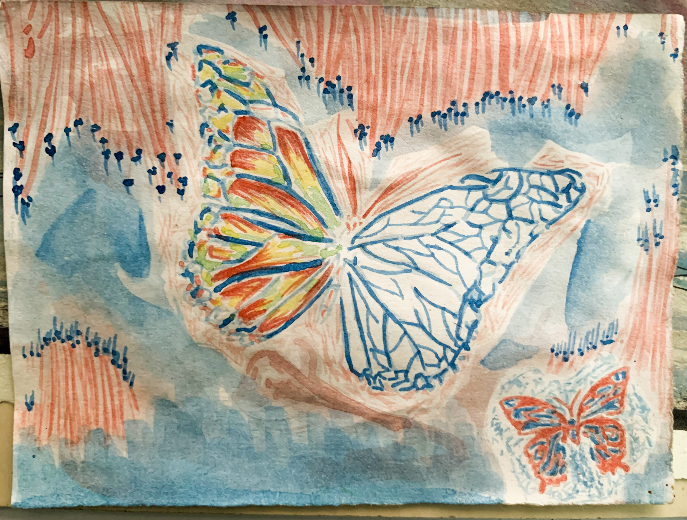
Butterfly - Watercolor
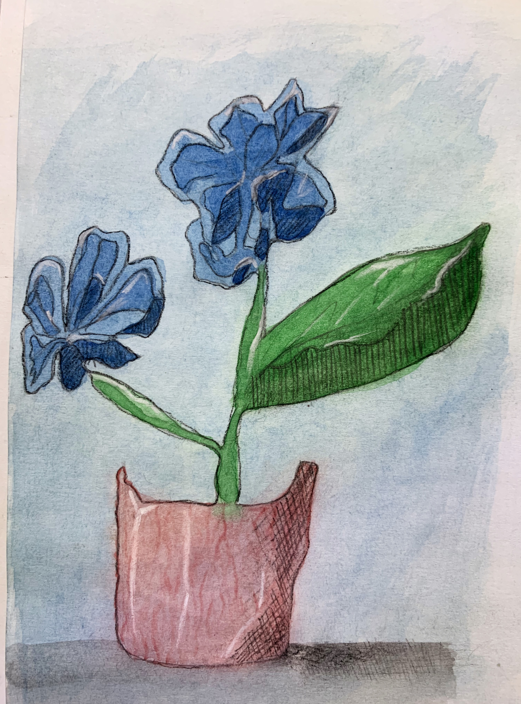
Blue Flower - Watercolor
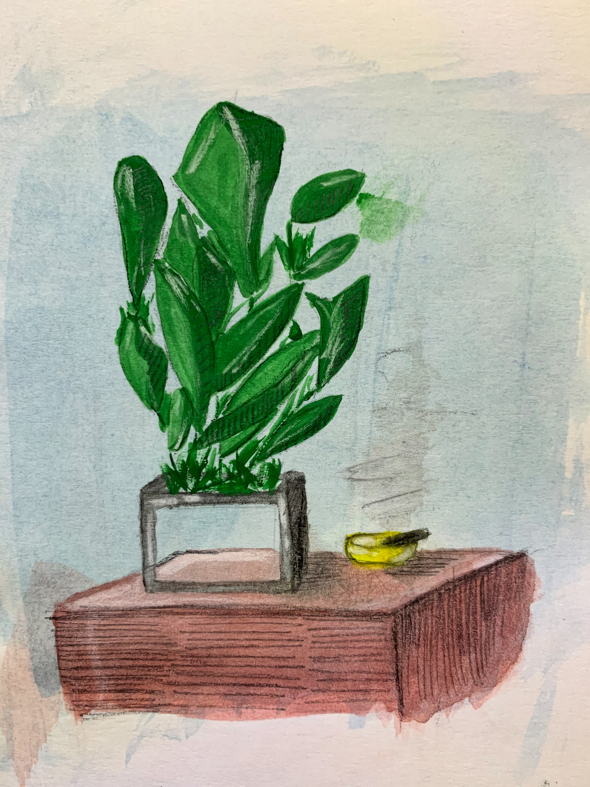
Leaves - Watercolor
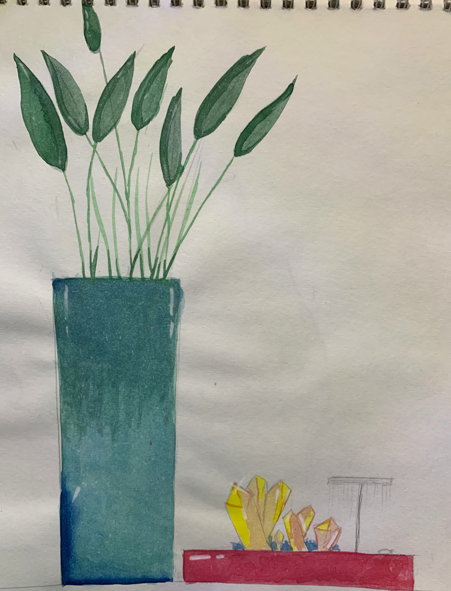
Plant in jar - Watercolor
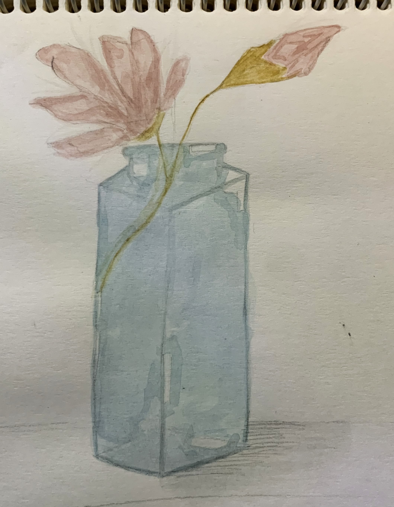
Plant in glass jar - Watercolor
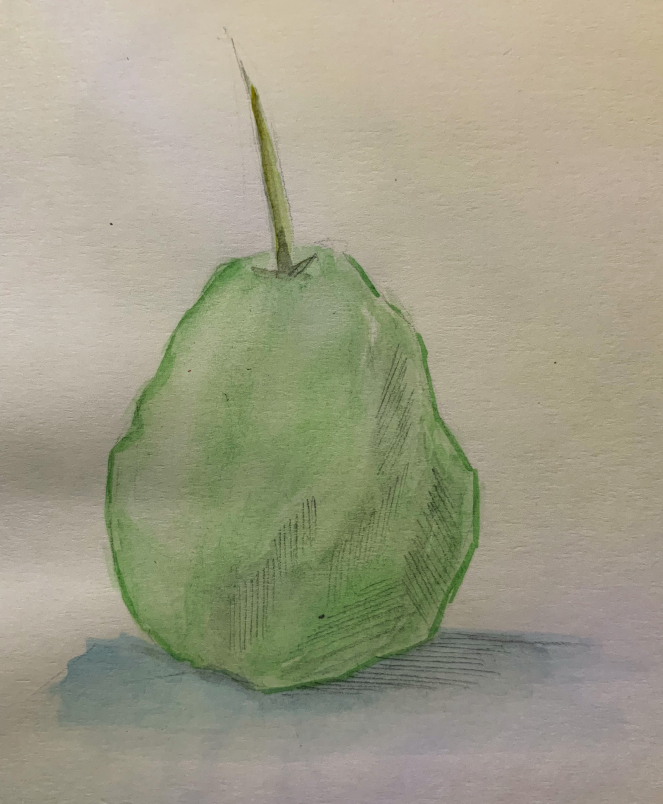
Pear - Watercolor
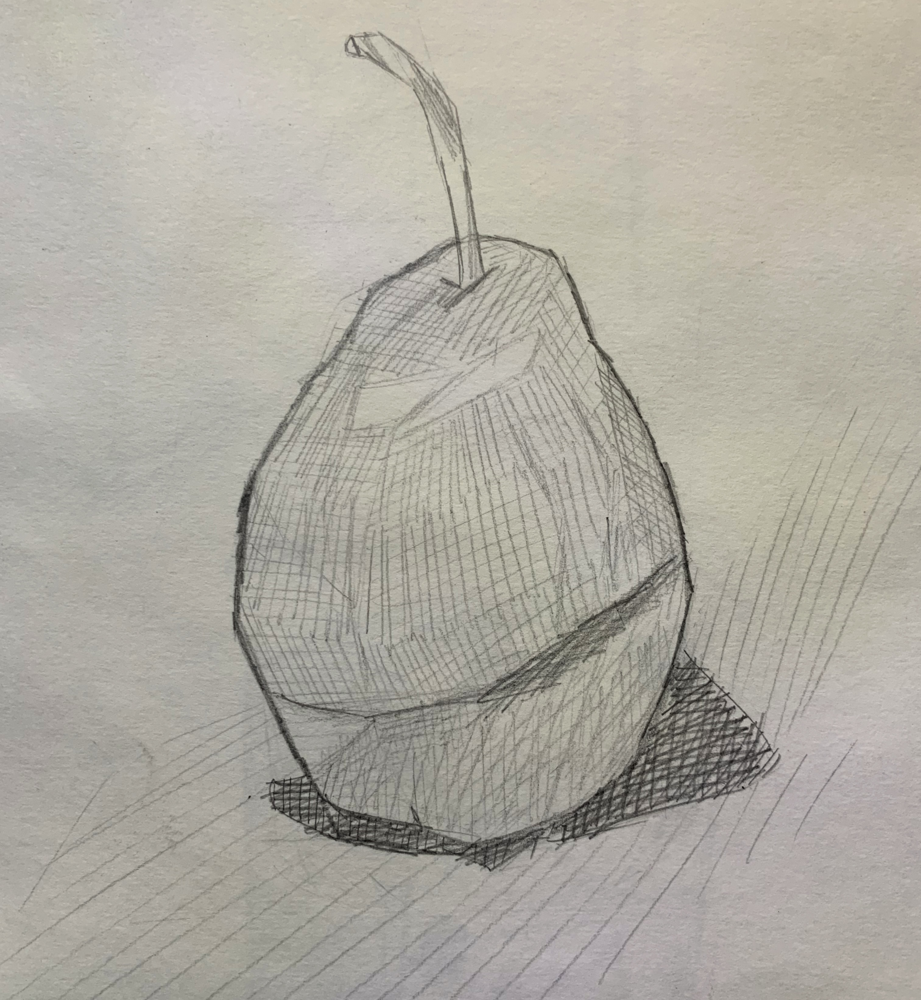
Pear - Pencil
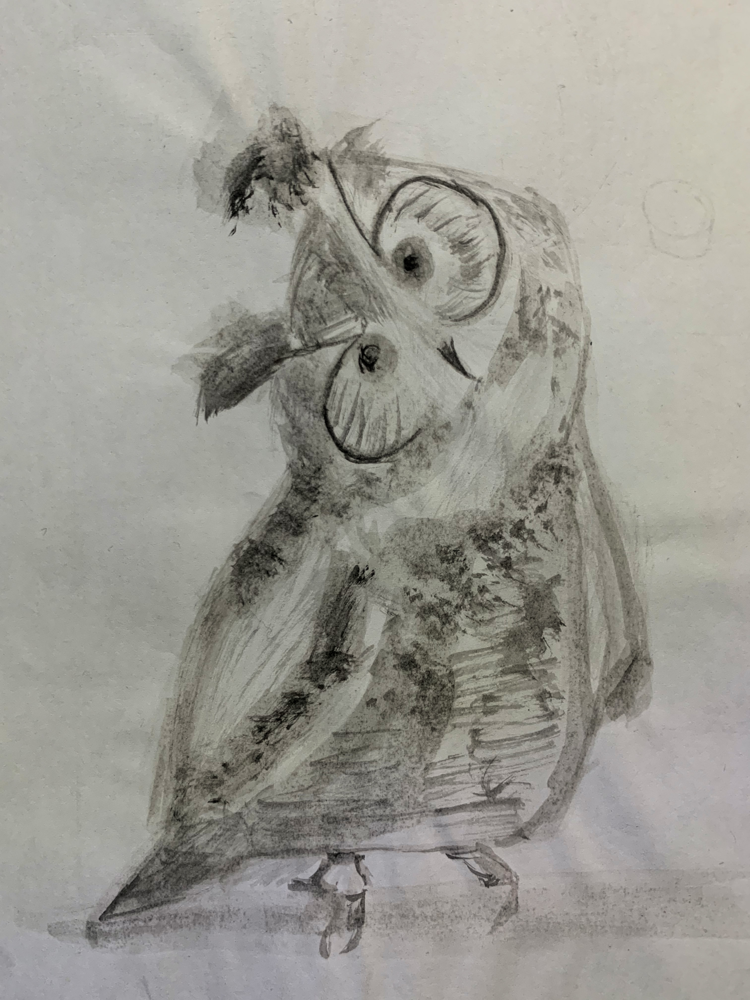
Owl - Watercolor
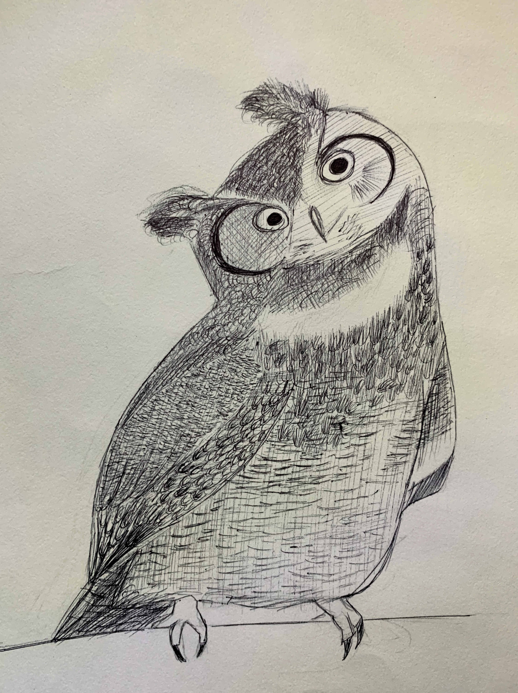
Owl - Pen
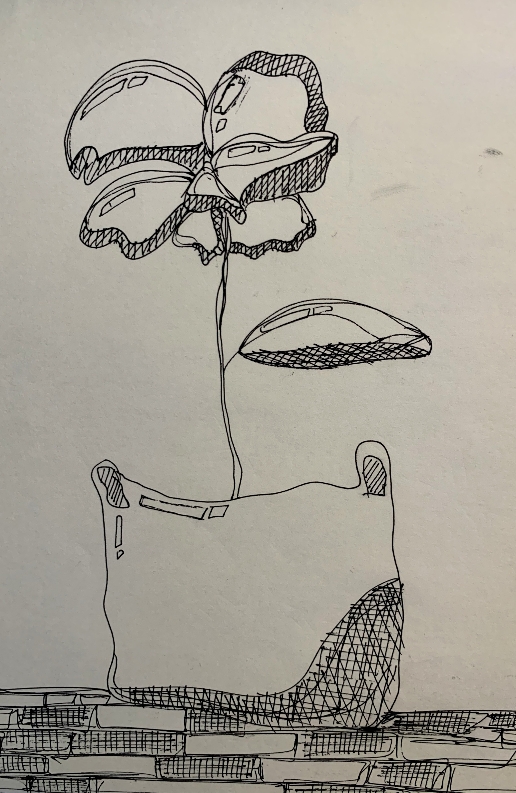
Flower in bag - Pen
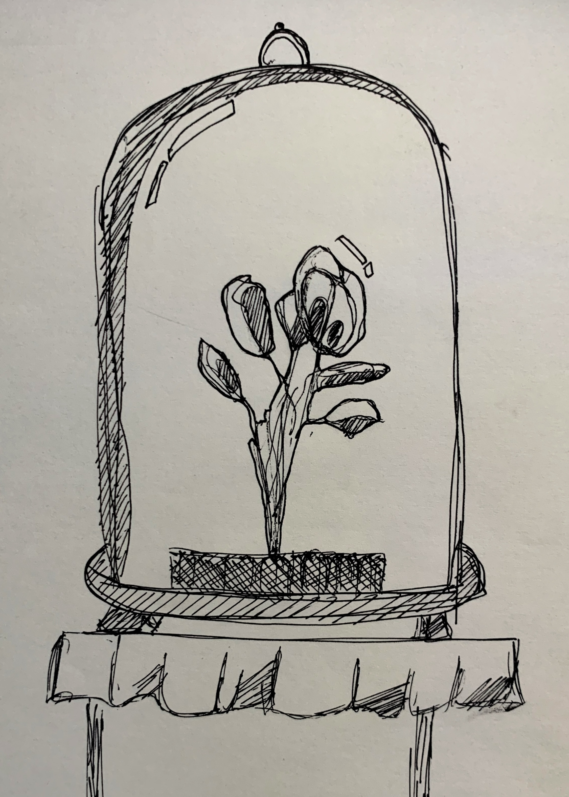
Flower in glass dome - Pen
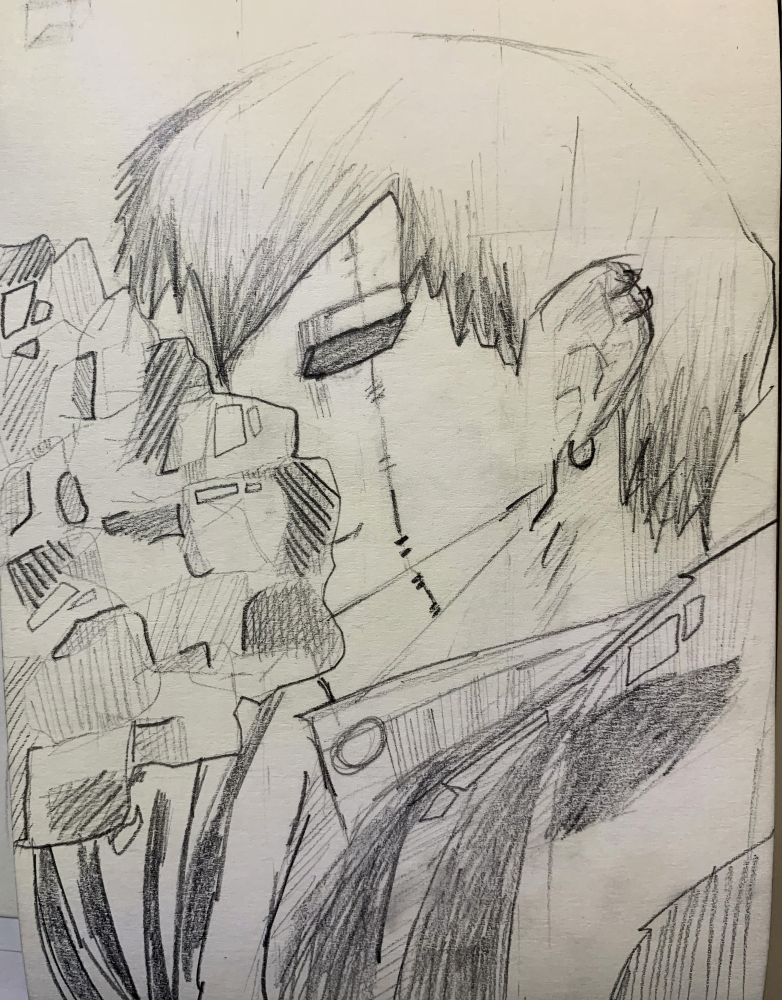
(fanart)Naoya Zenin - Pencil
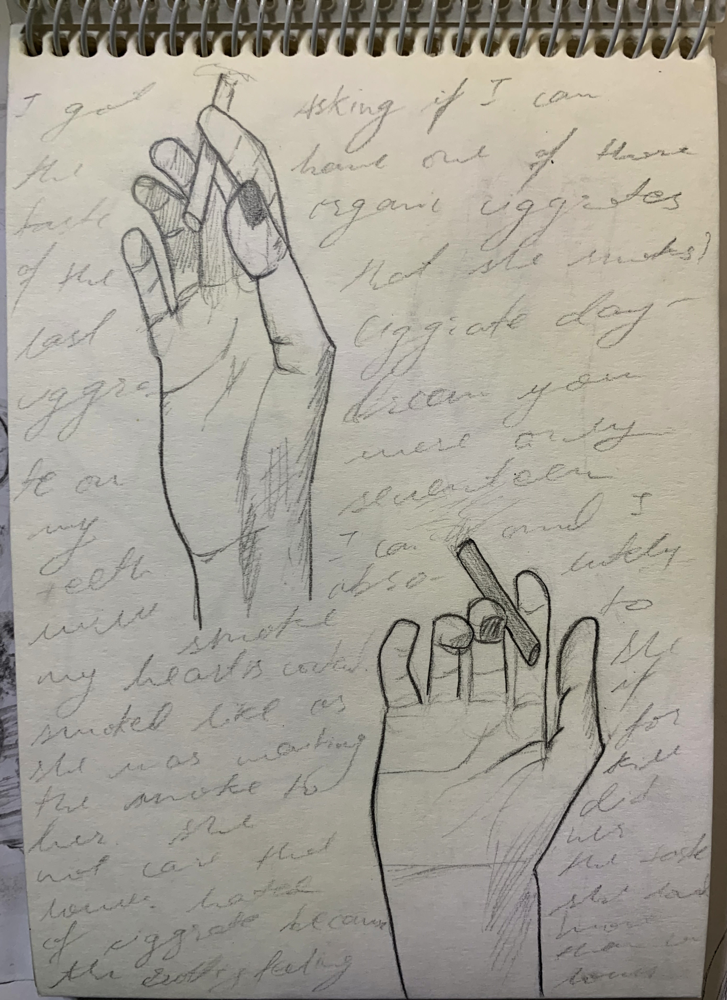
Hands holding ciggrate - Pencil
I have always had ineterest in art.
I mostly work with watercolor and pencil sketches.
Watercolor was something that I have done for a long time but sketches are new to me so most of the skeches are pratice works.
Pen art are also inclued.